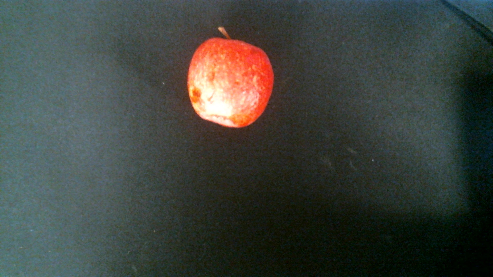
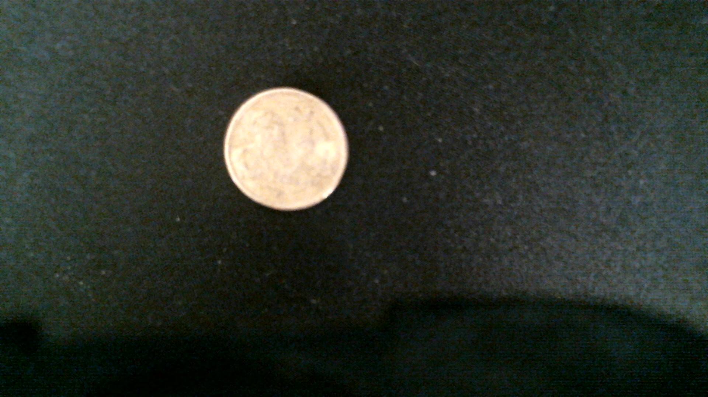
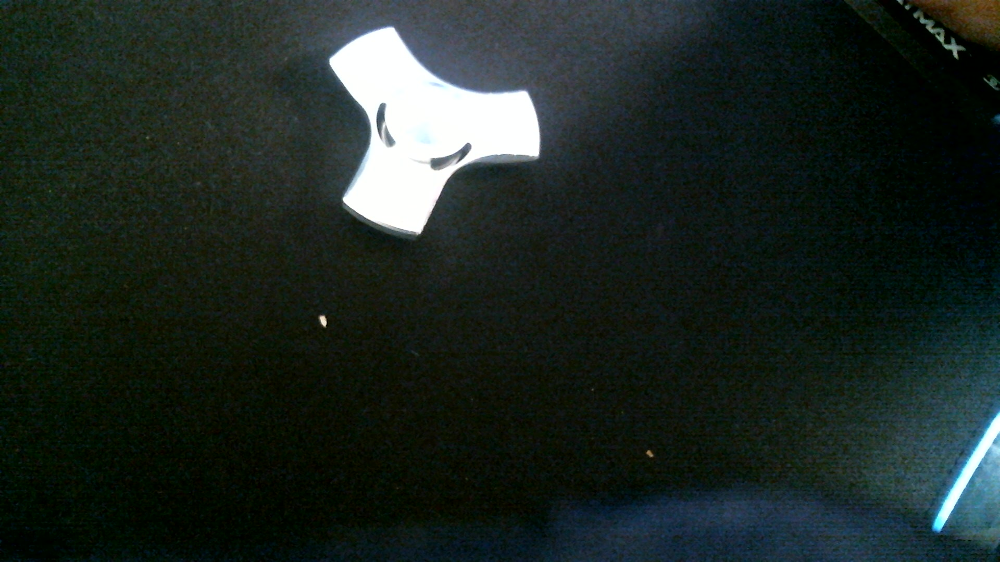
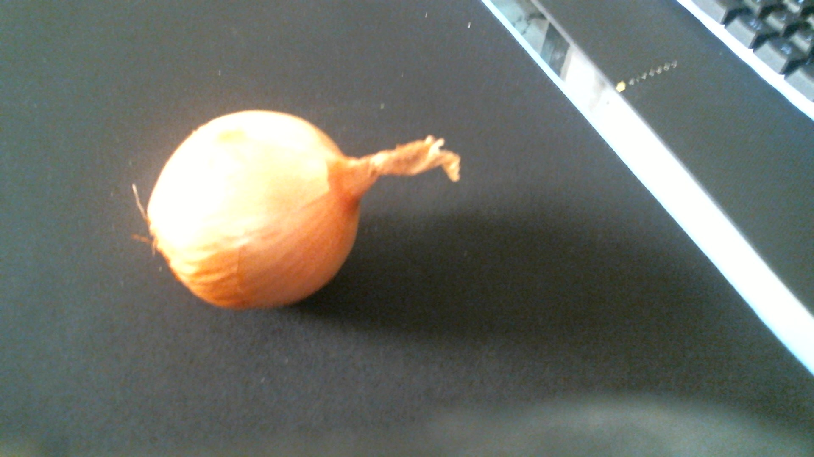
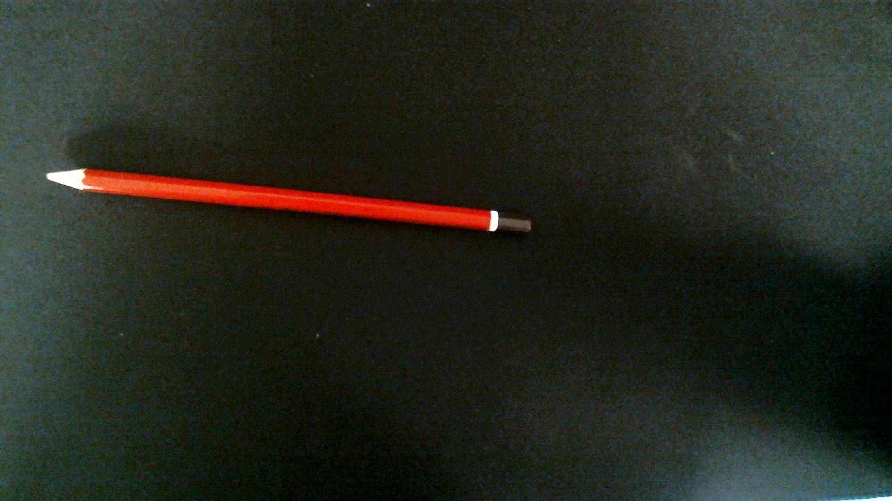
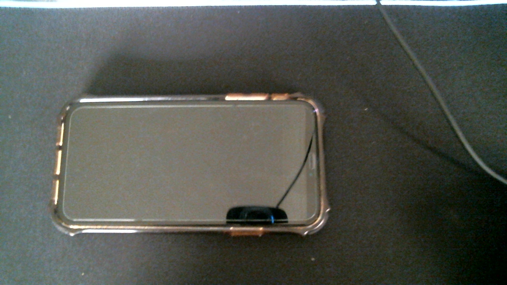
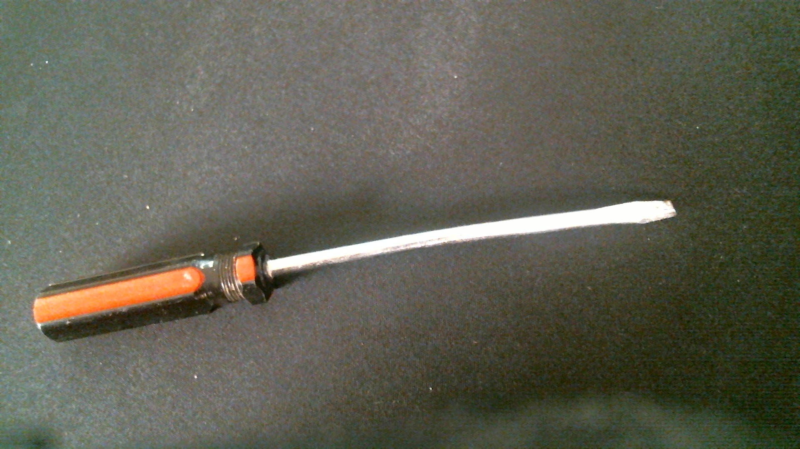

Apple -
output on GOOGLE LENS - Google lens was able to correctly define the object
output on MOBILENET MODEL - Mobile net defined this object as a balloon
Result -
only google lens was able to correctly define this object
Banana -
output on GOOGLE LENS - Google lens was able to correctly define the banana as a yellow banana
output on MOBILENET MODEL - The model was able to correctly identify it as a banana
Result -
both modles were able to identify this object
Coin -
output on GOOGLE LENS - Google lens was once again able to correctly idenify the coin
output on MOBILENET MODEL - Mobile net incorrectly identified the coin as a bubble
Result -
once again only google lens was a ble to correctly identify the object
Fidget Toy -
output on GOOGLE LENS - google lens was able to correctly identify the toy as a fidget spinner
output on MOBILENET MODEL - Mobilenet identified this object as a joystick
Result -
once again only google lens was able to identify the object
Golf Ball -

output on GOOGLE LENS - Google lens was able to correctly identify this object
output on MOBILENET MODEL - Mobile net was also able to correctly identify this object as a golf ball
Result -
in this case both models were able to identify the object
Onion -
output on GOOGLE LENS - Google lens was not only able to idntify the onion but also its variation
output on MOBILENET MODEL - mobile was indecisive between a punching bag and a maraca which were both incorrect
Result -
in this case google lens did far better than M32obilenet
Pencil -
output on GOOGLE LENS - google lens in this cas identifty the background a few time before correctly identifying the object as a pencil
output on MOBILENET MODEL - Mobilenet identified this object as a letter opener
Result -
though both had difficulty google lens was eventually able to get the correct answer
phone -
output on GOOGLE LENS - google lens was correctly able to idnetify the object as an Iphone
output on MOBILENET MODEL - Mobilenet thought the Iphone was a desktop computer
Result -
Google lens was the only one able to identify the object
Screwdriver -
output on GOOGLE LENS - Google lens suprising was able to identify the exact screwdriver model
output on MOBILENET MODEL - mobile net was able to correctly identify the object as a screwdriver
Result -
in this case google lens was better due to the fact it was able to identify the exact model
Toilet Paper -
output on GOOGLE LENS - google lens as able to correctly identify the objecct as a Toilet Paper
output on MOBILENET MODEL - Mobilenet was able to correctly identify this with high accuracy
Result -
both were able to correctly identify the object
in conclusion Mobilenet got 4/10 in the expimetnation however google lens got 9.5/10. so it is Proven the Goggle lens is far better than Mobilenet